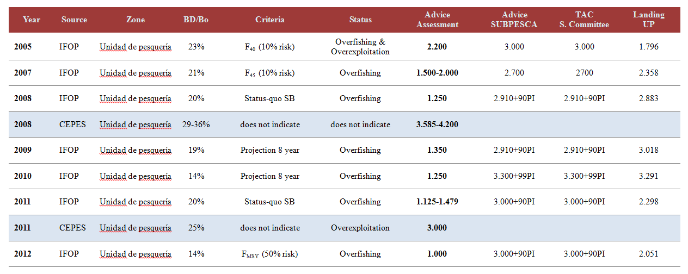

Juan-Carlos Quiroz
September, 2014
Supervisors:
- Klaas Hartmann (IMAS)
- Caleb Gardner (IMAS)
- Dirk Welsford (AAD)
- Philippe Ziegler (AAD)
- Paul Burch (IMAS - AAD)
Objetives:
Zone 87 & 41 ----> South America
Zone 58 ----> Kerguelen Plateau
Zone 48 ----> South Georgia

In this Chapter I will try develop tools to improve the theoretical population dynamic of Patagonian Toothfish on Kerguelen Plateau, particularly related to demographic traits under a spatially-structured base
The research should use a scenario-based analysis, avoiding parallel researches that come from FRDC project
Most of the inputs to setting the different scenarios should be derived from FRDC project
A similar population dynamics
A similar population dynamics
Chile (2012-2013)
Argentina (2004-2012)
Still thinking about it !!, but a good start point maybe is Hoshino et al. (2010) ...
Still thinking about it !!, but a good start point maybe is Hoshino et al. (2010) ...
PhD Repository in GitHub
Most of the writing outcomes will be based in Latex. Nevertheless Microsoft version files will also be stored. Why use LATEX? High typographical quality, time-saving, clean & order.
E.g.: Thesis Template (Thanks to Paul for sharing his Thesis template)